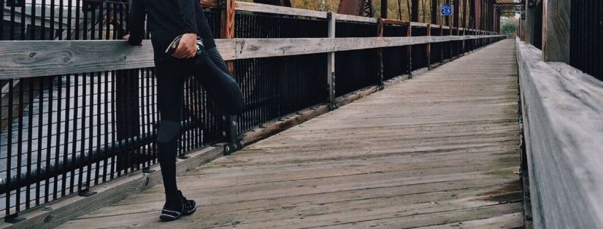
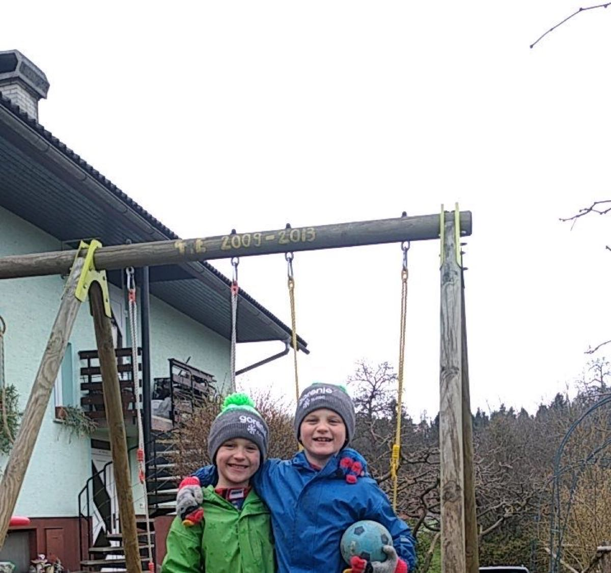
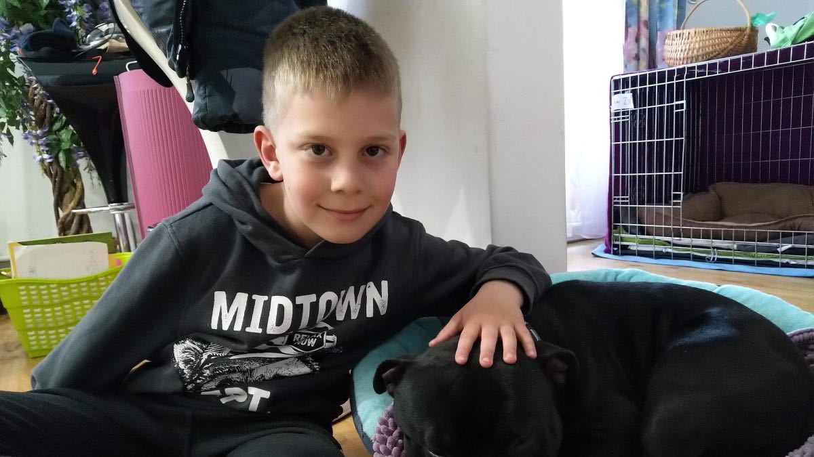
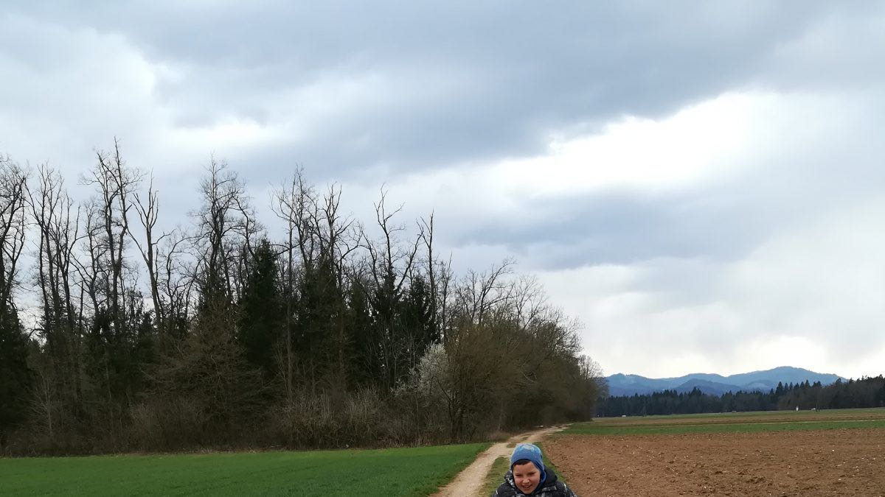
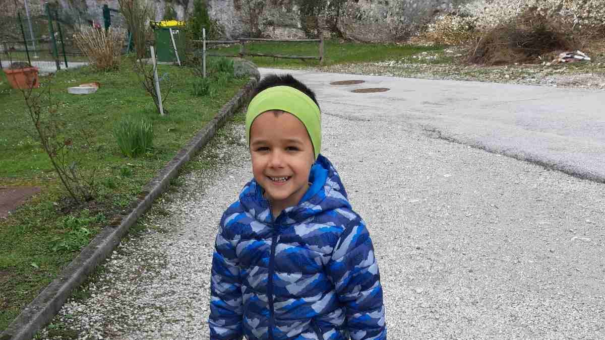
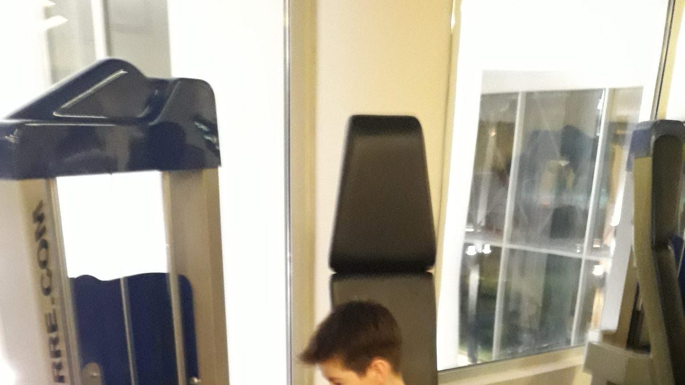
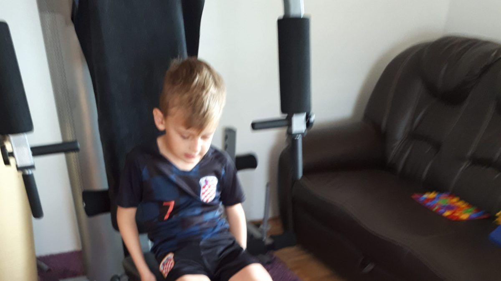
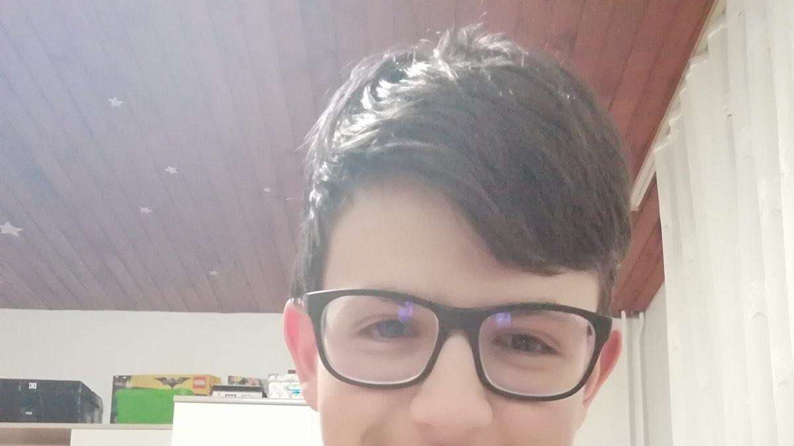
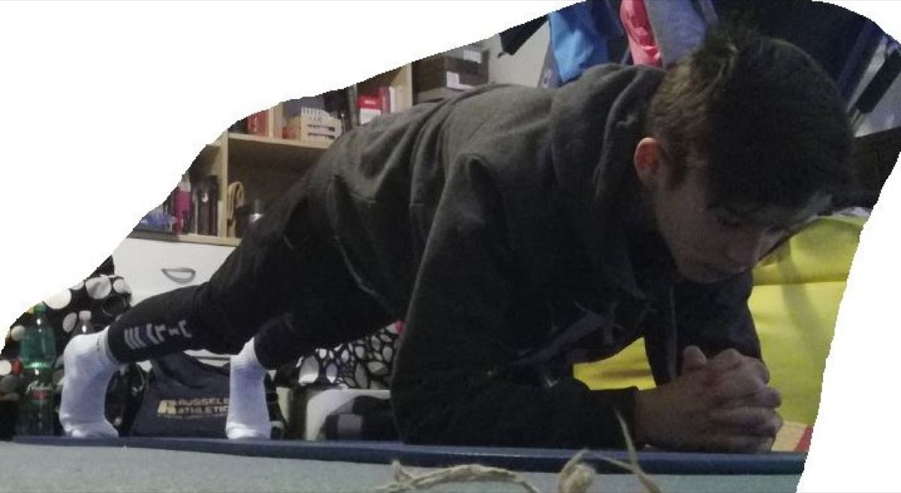
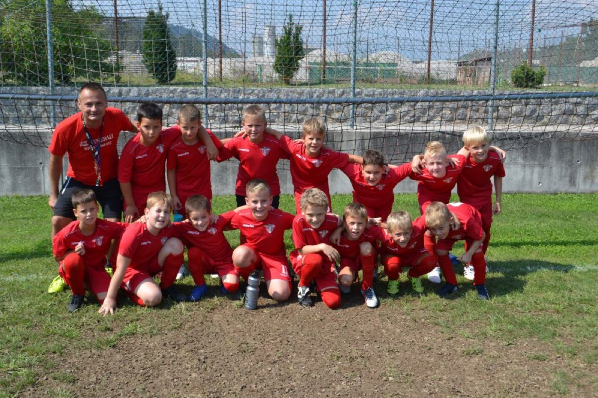

Tekaški trening [pripravil trener Dejan Robnik]
Pozdravljeni igralci! Upam , da ste vsi ok in zdravi ter da upoštevate vsa predpisana navodila. Ne želim izvajati na vas preveč pritiskov, kar se… […]
Preberi več
Pozdravljeni igralci! Upam , da ste vsi ok in zdravi ter da upoštevate vsa predpisana navodila. Ne želim izvajati na vas preveč pritiskov, kar se… […]
Preberi več![Zarica skozi čas – Od Filmarjev proti Zarici [8.del]](../../../wp-content/uploads/2020/04/pot-navzgor-zarica-skozi-cas.jpg)
Na prvem zboru je Srdan Ocepek jasno povedal, da njegova fiziologija bazira izključno na delu. Prvič v zgodovini kluba je uvedel obvezno prisotnost… […]
Preberi več
Matic in Gregor Eržen hodita v PŠ Besnica. Tudi onadva pogrešata nogomet, igrata pa se na domačem igrišču in tudi na šolske zvezke in knjige ne… […]
Preberi več
Pozdravljen Stojan, tudi jaz že pogrešam treninge, medtem pa si krajšam čas z igro in družbo mojega kosmatega prijatelja Zika lep pozdrav David… […]
Preberi več
Živijo. Tudi mi smo zdravi. Pogrešamo normalno življenje in upamo, da bo čimprej minilo. Na žogo nismo pozabili, saj gre z nami tudi na sprehod.… […]
Preberi več
Amar ne more brez žoge, tudi dvorišče je dobro. Dragi naš trener, še drugi teden je mimo, da se nismo družili.Ampak probamo kar trenirati doma, žoga… […]
Preberi več
Adi igra pri ekipi U13 eno izmed najbolj pomembnih pozicij v nogometu tj. zadnji vezni igralce. Velikokrat so ti igralci podcenjeni, saj ne pridejo… […]
Preberi več
Oglasila sta se Neris in Taris iz ekipe U9. Živjo, trener Matjaž! Pri nas smo vsi zdravi in polni energije, ki pa jo ob obveznosti za šolo sproščamo… […]
Preberi več
David Gogić je nogometaš ekipe U15 in je po “poklicu” vratar. Po odloku o prepovedi vseh aktivnosti v ŠP Zarica, je pridno treniral pod budnim očesom… […]
Preberi več
Pred malo več kot desetimi leti, ko sem še obiskoval osnovno šolo sem treniral nogomet v Klubu NK Zarica Kranj. Moj trener je bil Rado Kepic, ki še… […]
Preberi več
Nogometaši ekipe U15 se pridno učijo na daljavo, v prostem času pa ne pozabljajo na vadbo.V nadaljevanju pa kaj so napisali starši in nogometaši… […]
Preberi več
Minilo je že več kot 14 dni odkar smo se zadnjič videli. V teh časih moramo biti vztrajni in se res držati navodil, da ostanemo doma. Žal to pomeni… […]
Preberi več